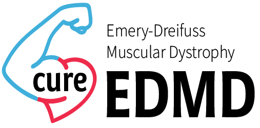

X-linked
Often linked to EMD variants. Usually affects males more directly, with female carriers at some risk.

Emery-Dreifuss muscular dystrophy (EDMD) is a rare genetic condition that affects the muscles, joints, and heart. It is a type of muscular dystrophy, which means it causes muscles to become weaker over time. EDMD was first described by doctors Alan Emery and Fritz Dreifuss in the 1960s and is named after them. Several different gene changes can cause EDMD. The most common involve the EMD and LMNA genes, but changes in other genes can also lead to the condition.
There are several genes that cause EDMD. Each gene is classified as a specific subtype of EDMD.
Changes in these genes result in non-working nuclear envelope proteins. The nuclear envelope is the membrane that surrounds and protects the DNA in cells. When nuclear envelope proteins do not work correctly, the three core symptoms of EDMD – joint contractures, muscle weakness, and heart involvement – develop.
The following table shows the seven EDMD subtypes and their associated gene, protein, and inheritance pattern.
| Subtype | Gene | Protein | Inheritance Pattern |
|---|---|---|---|
| EDMD 1 | EMD | Emerin | X-linked |
| EDMD 2 | LMNA | Lamin A/C | Autosomal dominant |
| EDMD 3 | LMNA | Lamin A/C | Autosomal recessive |
| EDMD 4 | SYNE1 | Nesprin-1 | Autosomal dominant |
| EDMD 5 | SYNE2 | Nesprin-2 | Autosomal dominant |
| EDMD 6 | FHL1 | Four-and-a-half LIM domains 1 | X-linked |
| EDMD 7 | TMEM43 | Transmembrane protein 43 | Autosomal dominant |
Less frequently associated EDMD genes include TOR1AIP1, SUN1, SUN2 and TTNN.
Often linked to EMD variants. Usually affects males more directly, with female carriers at some risk.
Often linked to LMNA variants. One altered copy can be enough to cause disease.
Two altered copies are needed. Parents may be carriers without obvious symptoms.
Emery-Dreifuss muscular dystrophy most commonly results in three symptom groups: muscle weakness, joint stiffness, and heart problems.
At a young age, EDMD may first appear as muscle weakness and stiff elbows or ankles, often with toe walking. After the teenage years and into early adulthood, heart problems may become more common.
The best way to diagnose EDMD is through genetic testing. This can reveal mutations associated with EDMD, including findings from exome or genome sequencing and targeted muscular dystrophy panels.
Doctors may also use other clues when genetic testing is not yet available or indicated. EDMD often causes elevated Creatine Kinase, which can be measured with a blood test. Heart rhythm and structure changes can be tracked with EKGs and echocardiograms. Muscle biopsy and physical exam findings can also support diagnosis.
As of 2026, there is no cure for EDMD, and care focuses on symptom management. Treatment may include cardiology care, medications, pacemakers, implanted defibrillators (CRT-D), physical therapy, and contracture management.
Some people may need mobility supports over time, and respiratory support such as CPAP or BiPAP can be helpful when breathing weakness develops.
Diagnosis usually combines symptoms, exam findings, heart testing, and genetic testing.
Ask how often ECG, Holter, and echocardiogram are needed for your situation.
Discuss physical therapy, mobility supports, and emergency planning with your specialists.
Visual Guide